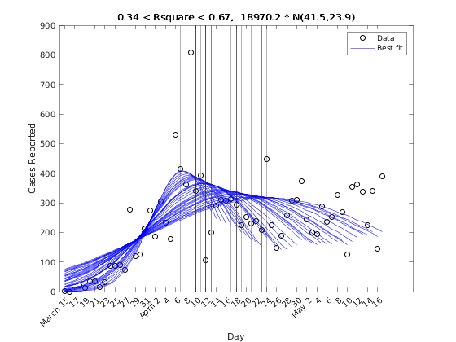
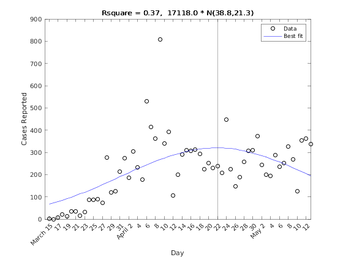
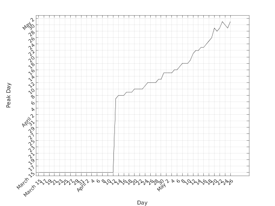

Gaussian curve fit to local covid-19 data
Fit a Gaussian curve to local covid case data
Contents
Local data source
use python for webscraping of data to output datatmp.csv
python parse.py
clear all close all datetime(now,'ConvertFrom','datenum') rawdata = readtable('datatmp.csv'); % work arrays PeakDay = ones(length(rawdata.Day),1); Rsquare = NaN(length(rawdata.Day),1);
ans = datetime 12-May-2020 07:08:00 Warning: Table variable names were modified to make them valid MATLAB identifiers. The original names are saved in the VariableDescriptions property.
Stability of peak estimate
plot raw data
handle3=figure(3); plot(rawdata.Day,rawdata.CasesReported,'ko') hold % iteratively add curve fits to raw data starting at day 30 for iii = 30:length(rawdata.Day) simplemodel = @(r) r(3)./(r(2)* sqrt(2.*pi))* exp(-.5 * ((rawdata.Day(1:iii) -r(1))/r(2)).^2 ); fun = @(r) simplemodel(r) - rawdata.CasesReported(1:iii); x0 = [27,50,800]; opts1= optimset('display','off'); x = lsqnonlin(fun,x0,[],[],opts1); PredictedValues = simplemodel(x); [maxcase,idmax] = max(PredictedValues ); PeakDay(iii) = idmax; Rsquare(iii) = 1 - sum((rawdata.CasesReported(1:iii) - PredictedValues ).^2)/sum((rawdata.CasesReported(1:iii) - mean(rawdata.CasesReported)).^2); plot(rawdata.Day(1:iii),PredictedValues,'b-') xline(idmax); end legend('Data','Best fit') xlabel('Day') ylabel('Cases Reported') title(sprintf('%4.2f < Rsquare < %4.2f, %4.1f * N(%4.1f,%4.1f)',min(Rsquare),max(Rsquare),x(3),x(1),x(2))) xticks(rawdata.Day(1:2:length(rawdata.Day))) xticklabels(rawdata.Date(1:2:length(rawdata.Date))) xtickangle(45) saveas(handle3,'evolution','png')
Current plot held
Current Gaussian curve fit to local data
plot the curve fit with all available data
handle1=figure(1); plot(rawdata.Day,rawdata.CasesReported,'ko',rawdata.Day,PredictedValues,'b-') xline(idmax); legend('Data','Best fit') xlabel('Day') ylabel('Cases Reported') title(sprintf('Rsquare = %4.2f, %4.1f * N(%4.1f,%4.1f)',Rsquare(length(Rsquare)), x(3),x(1),x(2))) xticks(rawdata.Day(1:2:length(rawdata.Day))) xticklabels(rawdata.Date(1:2:length(rawdata.Date))) xtickangle(45) saveas(handle1,'simplefit','png')
Peak day change with updated data
plot the sensitivity of the peak day to the available data starting from day 30
handle2=figure(2); plot(rawdata.Day,PeakDay,'k') xlabel('Day') ylabel('Peak Day') xticks(rawdata.Day(1:2:length(rawdata.Day))) xticklabels(rawdata.Date(1:2:length(rawdata.Date))) xtickangle(45) yticks(rawdata.Day(1:2:length(rawdata.Day))) yticklabels(rawdata.Date(1:2:length(rawdata.Date))) ytickangle(45) grid on saveas(handle2,'peakday','png') % write table writetable(splitvars(table(rawdata,PredictedValues,PeakDay)),'data.csv')
bokeh interactive plot